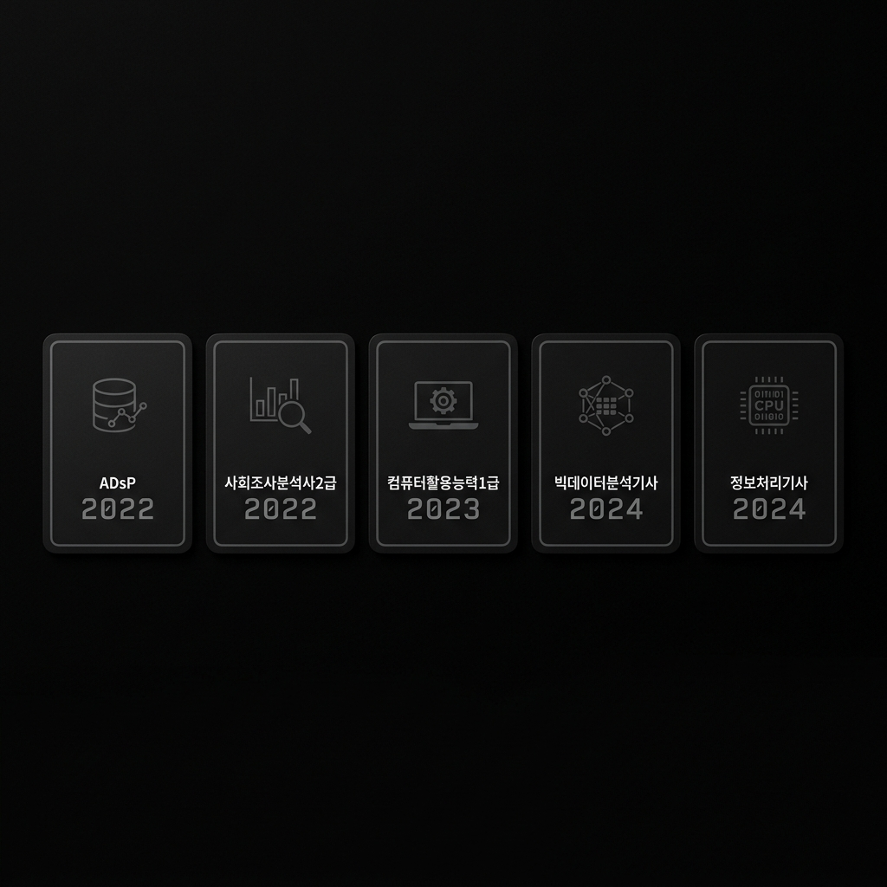

Portfolio · 2025
YOO YONGWAN
"해라, 진심을 다해서"
GO for it, Go whole heart
About
채용대행 분야에서 공공기관 및 공기업을 대상으로 다양한 채용 프로젝트를 성공적으로 이끌어온 PM입니다. 채용 시스템 기획부터 서류, 필기, 면접 전형 운영까지 End-to-End 실행 경험을 보유하고 있으며, 현장의 비효율을 데이터와 시스템으로 개선합니다.
Python, SPSS 등 통계 분석 도구와 Microsoft Excel을 활용한 RFP 작성 역량을 바탕으로, 단순 채용 운영을 넘어 고객사의 채용 프로세스 전반을 컨설팅합니다.
Key Achievements
Career
Key Projects
Skills & Tools

취득을 증명하는 공식 자격증 사본들을 하나로 취합한 이미지입니다. 이미지를 클릭하시면 원본 크기로 팝업 확대하여 상세 내역을 정밀하게 검토할 수 있습니다.
Education
궁금한 점이 있으시면 편하게 연락해주세요.
2024년 에너지 공기업 채용 프로젝트 당시, 저는 제안 단계부터 참여하여 타사와의 차별점을 '데이터 기반의 맞춤형 홍보'로 정의했습니다. 과업지시서와 시장 리서치를 통해 지원자 주 타겟층이 고령층임을 파악했고, 경쟁사들이 집중하던 디지털 광고 대신 지사 중심의 오프라인 홍보(팜플렛, 현수막)를 역제안하여 수주를 확정 지었습니다.
수행 과정에서는 '고객사의 불안을 해소하는 투명성'을 원칙으로 삼았습니다. 요청받지 않은 산출물이라도 지원자 서류를 시스템적으로 정교하게 정리하여 수시로 공유했습니다. 이러한 철저한 리스크 관리와 정성은 고객사의 깊은 신뢰로 이어졌고, 그 결과 1.2억 원의 초기 계약에서 총 2.0억 원 규모 (66% 증액)로 사업을 확대 완수했습니다.
세종시 소재 준정부기관의 연간 채용 프로젝트는 담당자가 세 차례나 바뀌는 극심한 혼선 속에서 진행되었습니다. 특히 최종 합격자 발표 전, 민원 대응을 이유로 면접 후 진위 확인 기간을 단 3일로 단축하라는 무리한 요구가 발생했습니다.
저는 인수인계 공백으로 인한 히스토리 부재를 탓하기보다, 스스로 이전 용역사 과거 데이터를 분석하여 업무의 맥락을 복원했습니다. 서류전형 이후 선제적으로 증빙서류를 제출받고 현장 제출과 동시에 진위 확인을 진행하는 '병렬 프로세스'로 기한 내 완료했습니다. 이러한 집요함 덕분에 해당 기관으로부터 2년이 지난 지금까지도 재입찰 참여 요청을 받고 있습니다.
신설 공공기관의 첫 채용 총괄을 맡았을 때, 가장 큰 난관은 예산 부족과 불명확한 평가 기준이었습니다. 각종 채용 플랫폼에 직접 단가 협상을 제안하여 홍보 예산을 최적화했고, 유관 협회 및 직능단체에 다이렉트로 컨택하는 발로 뛰는 홍보를 전개했습니다.
특히 신설 기관으로서 가장 민감한 이슈인 '경력 산정'의 공정성을 확보하기 위해, K-dart(전자공시시스템) 기관 코드와 사업자 유형을 연동한 객관적 필터링 기준을 설계했습니다. 감사관 입회하에 평가위원 만장일치 선발 기준을 적용, 고객사의 행정적 부담을 완벽히 해소했습니다.
지난 채용 컨설팅 경력 동안 10개 이상의 프로젝트를 총괄하며 누적 2.0억 원의 기여 순이익(평균 이익률 30% 이상)을 달성했습니다. 저의 가장 큰 핵심 경쟁력은 현장에서 빈번하게 발생하는 인적 오류(Human Error)를 방지하고, 수동 업무로 인한 비용 및 시간의 낭비를 시스템적으로 개선하는 역량입니다.
메일머지 활용, 데이터 교차 검증 체계 기획 등 운영의 안정성과 비용 효율화를 최우선으로 삼아왔습니다. 저에게 채용 대행이란 단순 인력 투입이 아니라, 고객사의 운영 리스크를 진단하고 전체 프로세스의 비용 구조를 최적화해 수행하는 컨설팅 과정입니다.
한정된 예산 내에서 경력직을 유치하기 위해 채용 플랫폼 담당자와 직접 단가 협상을 진행(첫 프로모션 활용 등)하고, 유관 기관 및 협회에 다이렉트로 연락해 채용 홍보를 전개했습니다. 도출된 내용을 '홍보 결과 보고서'로 별도 작성해 기관 담당자의 내부 상급자 보고와 신속한 의사결정을 지원했습니다.
K-dart(전자공시시스템) 기관 코드 유형 분류와 경력 회사별 비전·목표 등을 기반으로 선발 기준의 근거를 수립했습니다. 최종적으로 감사 담당자 입회하에 평가위원 3인의 의견 일치를 거쳐 선발 근거를 제공하였으며, 결과적으로 내부 재직자와 외부 인력이 편중되지 않고 골고루 선발되어 채용의 공정성을 확보했다는 평가를 받았습니다.
촉박한 일정에 난색을 표하거나 변명하기보다는 어떻게든 완수하겠다는 근성으로 접근했습니다. 일정을 단축하기 위해 서류 합격 단계에서 증빙 파일을 선제적으로 제출받고, 1주일간의 면접이 진행되는 동안 현장에서 제출하는 서류의 진위 확인을 동시에 수행하는 '병렬 프로세스'를 적용했습니다. 그 결과 기한 내 최종 발표를 무사히 완료했습니다.
이 과정에서 수작업 진위 확인에 소모되는 물리적 리소스를 직접 체감하였고, 이는 향후 관련 리소스를 절감할 수 있는 채용 솔루션 및 시스템 개선을 기획하는 실질적인 계기가 되었습니다.
1차 일반직 채용 운영을 통해 구축한 신뢰를 바탕으로, 초기 제안요청서상 제외되었던 '필기전형' 위탁 운영의 필요성을 논리적으로 제안해 경영직 필기전형 및 추가 수의계약을 성공적으로 유치했습니다.
고령자 지원 비율이 높은 일반직 직무 특성을 감안해, 전국 단위 홍보 대신 기관과 협의한 10개 핵심 지역에 교차로 신문 및 현수막 등 오프라인 홍보를 집중했습니다. 또한 면접대상자 약 200명에게 메일머지를 활용한 맞춤형 서류 안내를 진행하고, 예비합격자를 포함한 진위확인 내역을 엑셀로 제공하여 기관 담당자의 행정 부담을 최소화했습니다.
※ 기관명은 개인정보 보호를 위해 비공개 처리되었습니다.
단순 실무 오퍼레이터(Operator)에 머물지 않고, 고객사의 리스크를 선제적으로 진단하고 해결하는 컨설턴트(Consultant) PM로 거듭나기 위해 다음과 같은 체질 개선을 단행했습니다.
이론과 분석적 기술을 보강하고자 2024년 빅데이터분석기사 및 정보처리기사 자격을 연달아 취득하여 시스템 설계 및 가용성 높은 데이터 분석의 기틀을 다졌습니다.
서울투자진흥재단 프로젝트 수행 시, 규정이 모호한 경력 인정 여부에 대해 K-dart(전자공시) 유형 분류 모델을 연동한 '객관적 경력 평가 기준'을 기획·제안하여 감사관의 만장일치 통과 및 공정성을 입증했습니다.
에너지 공기업 채용 시 타겟층(고령층) 특성을 정밀 분석하여 디지털 광고 대신 전국 지사 오프라인 타겟 홍보를 역제안하고, 필기 전형의 필요성을 논리적으로 제안해 1.2억의 초기 계약을 2.0억 규모로 66% 증액 수주시켰습니다.
자격 검정 기관에서 발급한 공식 자격증 사본 모음입니다. (마우스 드래그 혹은 모바일 핀치 줌이 가능합니다.)